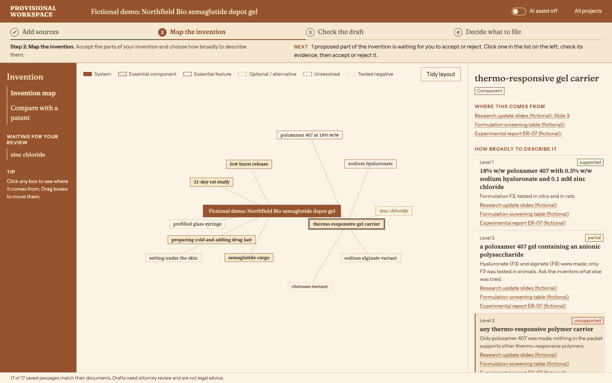
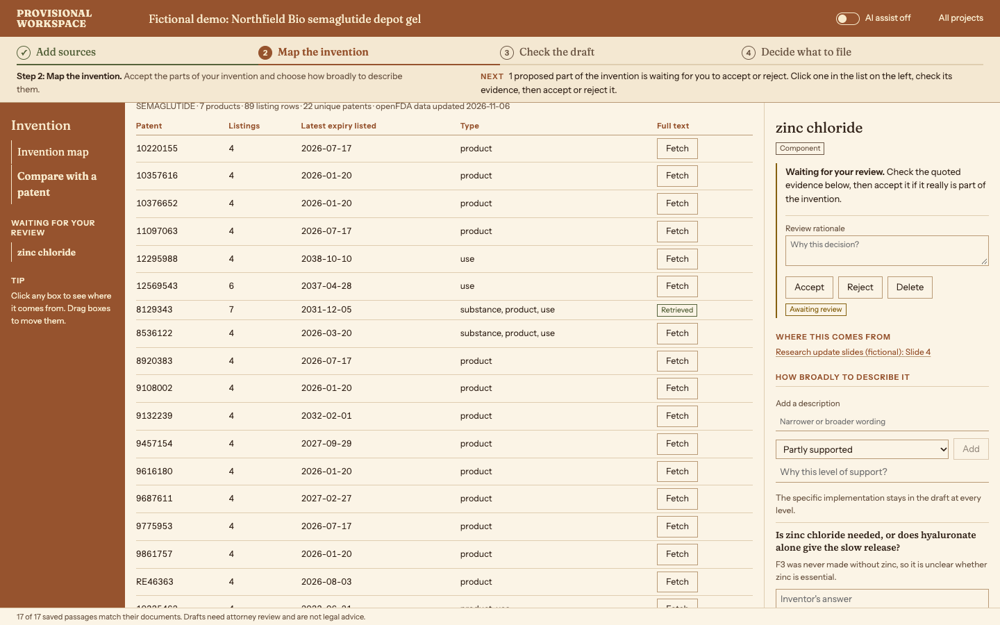
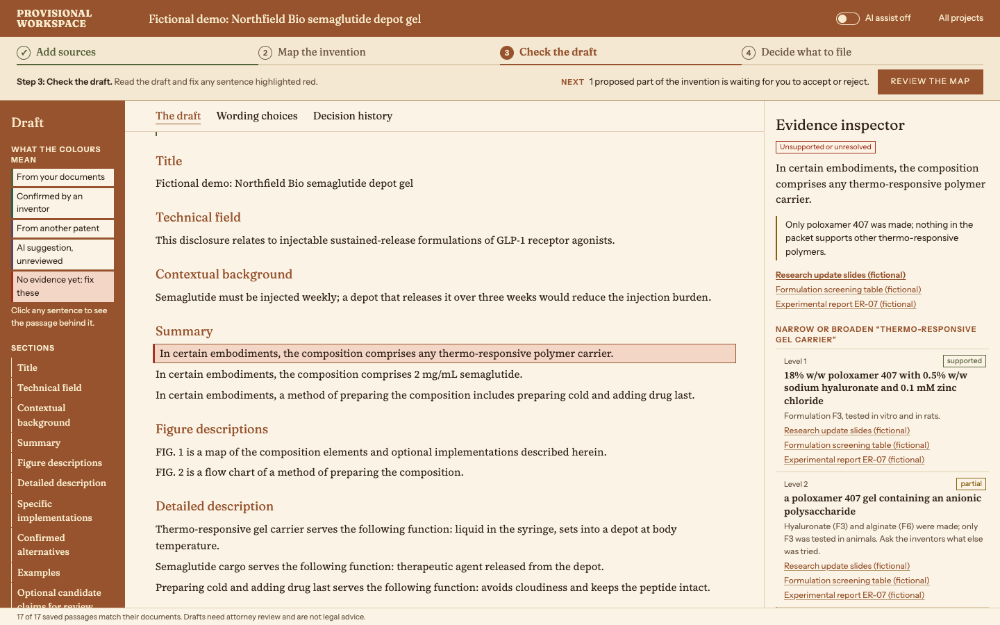
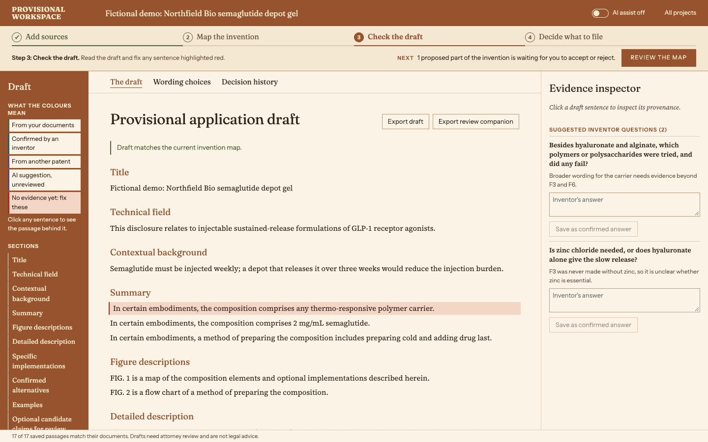
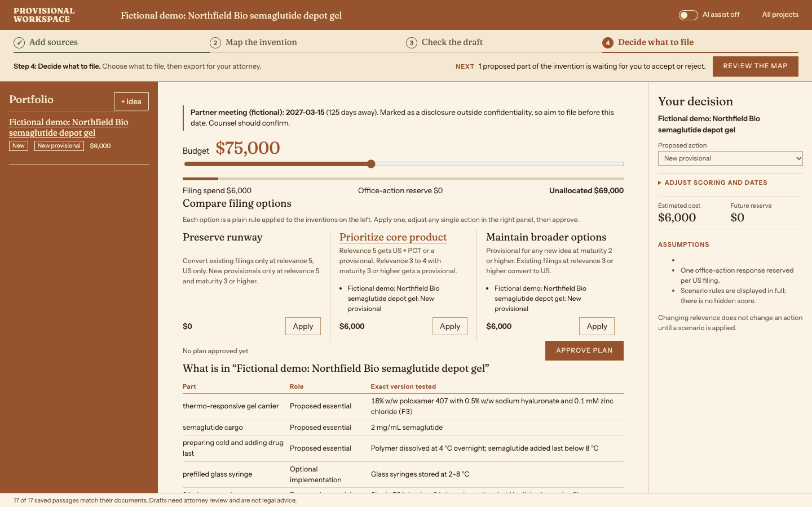

Situation (fictional): Northfield Bio's scientific lead has a semaglutide gel (formulation F3) that held the drug in rats for 21 days. A partner meeting is coming where results will be shown without a confidentiality agreement. They believe the preparation approach and formulation choices explain the improvement, but must separate what they demonstrated from what they propose more broadly.
They upload what they already have: research slides, a formulation table, an experimental report, a preparation protocol, scientist notes and a business brief (context only). They link the marketed drug (Ozempic, live FDA Orange Book data) and a related public patent application (Tufts silk GLP-1 depot, USPTO status: abandoned). Text version

The packet becomes a map of parts: the gel carrier, poloxamer 407, hyaluronate, zinc (unresolved: never tested without it), the cold preparation step, and failed or alternative versions (chitosan failed; alginate only in vitro). Each part quotes its source. For the carrier they choose how broadly to describe it: the exact F3 recipe (supported), "a poloxamer 407 gel containing an anionic polysaccharide" (partial), or "any thermo-responsive polymer carrier" (unsupported). Text version

Comparison mode lines up claim 1 of the Tufts application with the map: the GLP-1 drug corresponds, the silk matrix differs.

The draft is generated from the reviewed map. One sentence claims "any thermo-responsive polymer carrier" and is flagged red: the evidence only covers poloxamer 407. The inspector shows the source passage and offers the narrower wording; choosing it updates only the affected draft sections, and the change is logged. An inventor answer ("why is semaglutide added last?") becomes a confirmed statement the draft can cite. Text version


A short checkpoint: what goes in this filing, what remains unresolved, the milestone date, and budget assumptions for counsel. The draft and a review companion export for the patent attorney. Text version
Fictional demo data. Drafts need attorney review and are not legal advice.